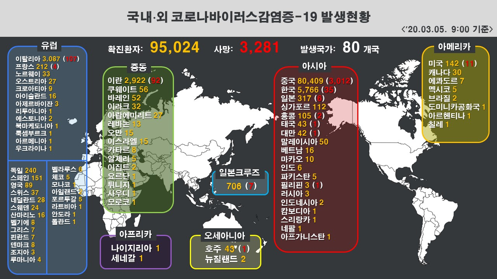

- 코로나 바이러스 팩트체크
- 코로나 바이러스 전염과 예방법
- 코로나 바이러스 현황
- 코로나 바이러스 주요 사건사고
코로나 바이러스 현황

국내 '코로나19' 확진자 현황
국내 감염병 위기경보 "심각"으로 상향
2월 23일, 감염병 위기경보[관심(해외 유행)→주의(국내 유입)→경계(국내 제한적 전파)→심각(전국 확산)] 수준을 '경계'에서 최고 수준인 '심각'으로 상향했다.
※ 3월 5일(목) 0시 기준
코로나 바이러스 현황 바로가기
코로나 바이러스 확진자 이동경로 바로가기